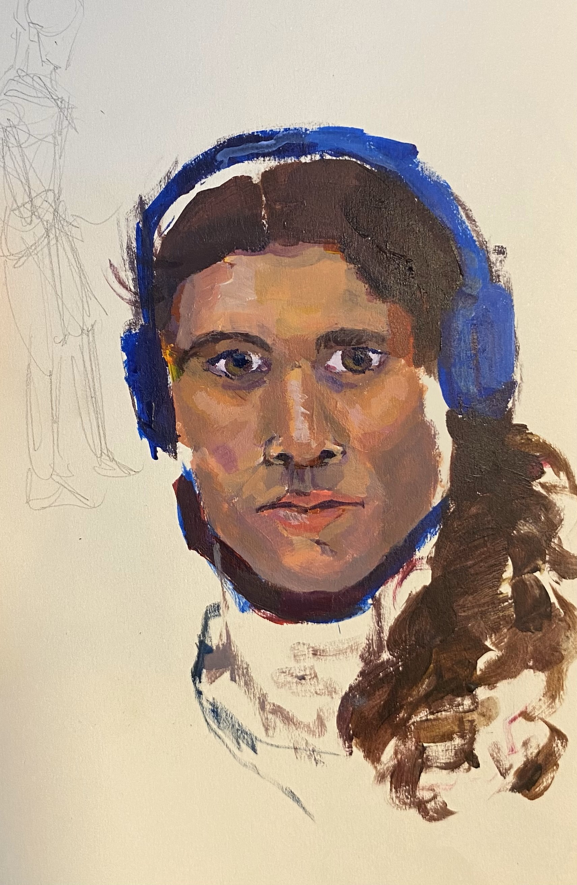

<!DOCTYPE html>
<html lang="en">
<head>
    <link rel="stylesheet" href="Index.css">
    <meta charset="UTF-8">
    <meta name="viewport" content="width=device-width, initial-scale=1.0">
    <title>Document</title>
</head>
<body>

</html>

<header>
    <!-- the content of the header goes header -->
    <div id="logopic">
    
    </div>
    <h1 id="logo">Adventures of a Jumbled Giraffe</h1>
     <nav>
        <ul id="nav-ul">
            <li>
                <a href="Index.html" class= "navbutton">Home</a>
            </li>
            <li>
                <a href="About.html" class = "navbutton">About</a>
            </li>
            <li>
                <a href="Gallery.html" class = "navbutton">Gallery</a>
            </li>
            <li>
                <a href="Exp.html" class = "navbutton">Experience</a>
            </li>
            <li>
                <a href="Blog.html" class = "navbutton">Blog</a>
            </li>
        </ul>
     </nav>
</header>


<main>
    <div id="main-content"> <!-- Can add side bar in main section -->
       
        <aside id="Filterbar">
            <section>
                <p>Go to Blog to filter by and to find content on:</p>
                <h4>Filter by Month</h4>
                <nav>
                    <ul>
                        <li><a href=""></a>Filter for January</li>
                        <li><a href=""></a>Filter for February</li>
                        <li><a href=""></a>Filter for March</li>
                    </ul>
                </nav>
            </section>

            <section>
                <h4>Filter by Category</h4>
                <nav>
                    <ul>
                        <li><a href=""></a>Birds</li>
                        <li><a href=""></a>Baking</li>
                        <li><a href=""></a>Drawing</li>
                 
                    </ul>
                </nav>


            </section>
        </aside>

        <div id="maintext">     

        <article>
        <header>
            <h2>Home</h2>
        </header>

        <main>
            <p>I am Maya Miers, a young engineer looking to improve her skills, protect nature, and women's healthcare technology. I attend the University of Warwick, studying mechanical engineering. I designed and built this website myself afer completing Couch to Coder 2024 (by Brightnetworks).</p>

            <p>In July 2024 I completed a weeks work experience on the engineering design team at Proseal. Proseal is a company that specialises in food tray heat sealing technology, and is based in Macclesfield.</p>

            <p>My interests include technology, design, painting, sculpting, birdwatching, bread-making, boardgames and fantasy books.</p>

        </main>

        <footer>
            <h2></h2>
        </footer>
        </article>
        
        
        
        
        
    
        </div>
</main>
    </div>

<footer>
   
    <h2 id="botname">Adventures of a Jumbled Giraffe</h2>

        <Section>
        <nav>
            <ul id="footer-ul">
                <div>
                    
                    <li><a href="" class = "botbox">CV</a></li>
                    
                </div>
                <div>
            
                <li><a href="www.linkedin.com/in/maya-miers" target="_blank" class = "botbox">Linkedin</a></li>
        
                </div>

                <div>

                    <li><a href="" class = "botbox">Email</a></li>
            
                </div>
            </ul>
        </nav>
        </Section> 

</footer>

</body>